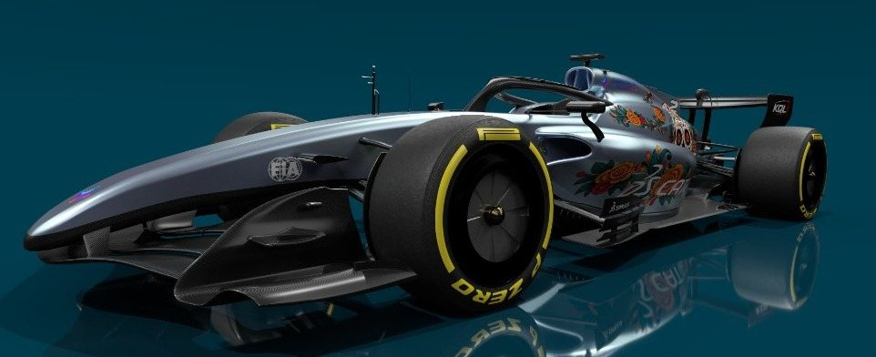
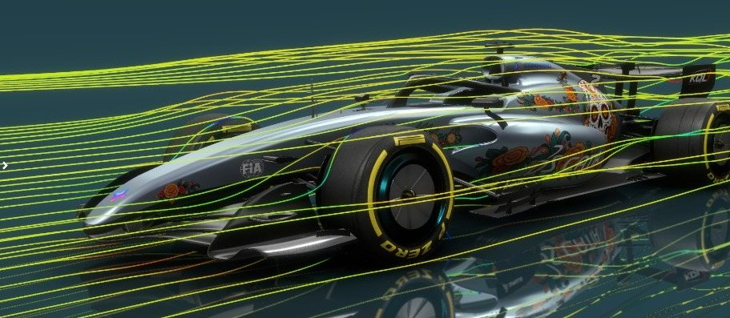
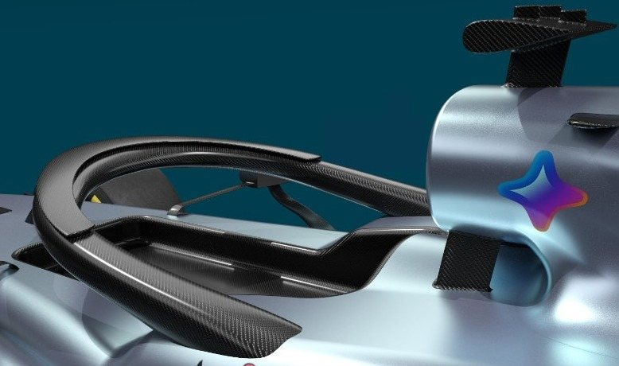
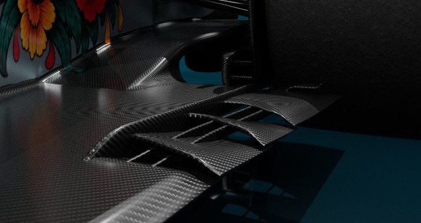
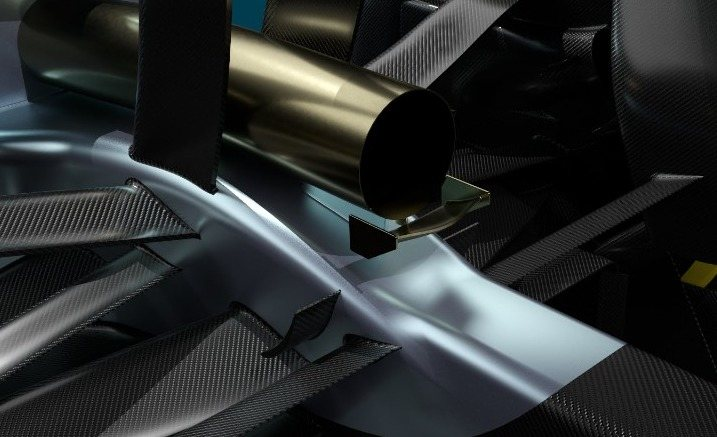
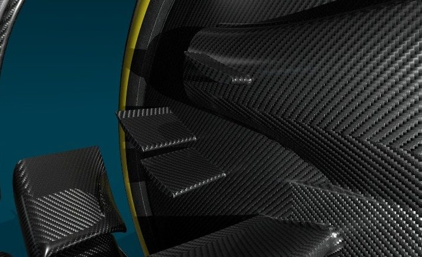
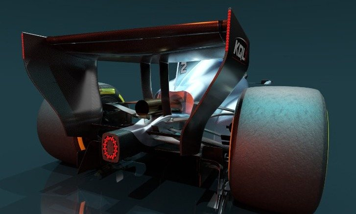
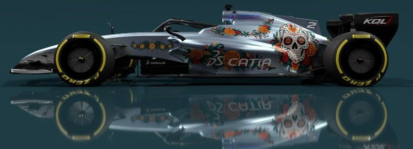

← All projects
Personal project · Oct 2025 – present
Formula 1 2026 – a full car designed from scratch in CATIA
A complete car within the 2026 FIA technical regulations. I deliberately avoided approximation-based workflows: no B-Rep, no imported geometry, only stable and robust GSD+ features organized with the modular design approach. Every circuit then gets its own aero package, validated in SIMULIA.

123456- 1Front wingConditions the airflow for the floor, sidepods and rear wing.
- 2Nose & chassisModeled inside the 2026 FIA reference volumes.
- 3Halo vaneCleans the halo wake toward the airbox and rear wing.
- 4Engine cover & liveryContinuous GSD+ surfaces; Día de Muertos livery.
- 5Floor edgeSlots and fins seal the floor against the tyre wake.
- 6Rear wingActive aero; monkey-seat winglets on the Monaco package.
250+hours of design
60,000+robust features
100 %GSD+ surfaces
0B-Rep or imported geometry
SIMULIAfull-car CFD
Approach
- Modular architecture: each sub-system is a module with published inputs and outputs, so any part can evolve without breaking the car.
- Precise surfacing only: 60,000+ features following best practices, no approximated geometry: longer, but every surface stays editable.
Circuit packages
- Monaco: no active-aero zones there, so the rear-wing actuators go and their regulatory volume is filled with monkey-seat winglets, converged with SIMULIA flow simulations.
- Mexico: 2,240 m altitude, ~20 % thinner air: four aero upgrades and a dedicated Día de Muertos livery.


Mexico GP package












Shared on LinkedIn as the series “Engineering behind F1”.